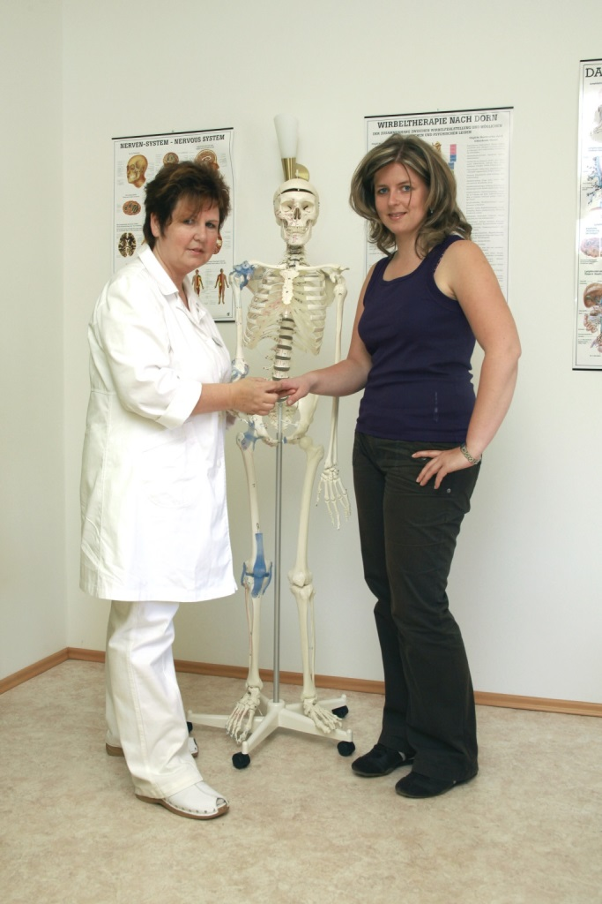

Über Sylke Scheduikat

Mein Name ist Sylke Scheduikat, geb. am 05.01.1969. Ich bin seit 1987 verheiratet und habe zwei Söhne.
Ich arbeite als Heilpraktikerin in der Naturheilpraxis und bin außerdem Inhaberin der Wellness-Oasen.
In meiner Naturheilpraxis, die direkt in der Wellness-Oase Juliusruh zu finden ist, berate ich Sie gern zu gesundheitlichen Problemen.
Aufgrund vieler Qualifikationen und langjähriger Berufserfahrung liegt das Hauptaugenmerk vor allem in der Behandlung
von Wirbelsäulen-, Gelenk- und Muskelerkrankungen sowie Migräne, Ödemen, Haut- und anderen chronischen Erkrankungen,
sowie Ernährungsberatung.
Ich arbeite mit unterschiedlichsten Therapien, die jeweils genau auf den Patienten abgestimmt werden.
Meine Qualifikationen
- Heilpraktikerin
- Ausbildung in Osteopathie
- Ausbildung in klassischer Homöopathie
- staatl. annerkannte Masseurin und medizinische Bademeisterin
- ärztlich geprüfte Ganzheitskosmetikerin
- Therapeutin für Fußreflexzonenmassage
- Reiki- Therapeutin
- Therapeutin für craniosacrale Therapie
- Kinesio Taping
- geprüfte Metabolic-Balance-Beraterin
- Therapeutin für manuelle Lymphdrainage und Ödemtherapie
- Therapeutin für Marnitz speziell und Dorn- Therapie